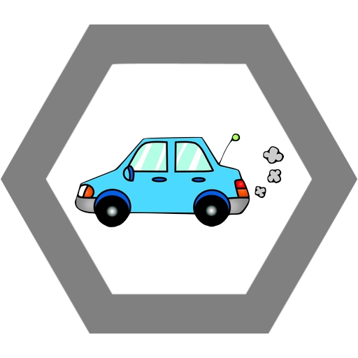

Až se rozplyne ten hustý zelený dým, můžeš si prohlédnout další exemplář z obludaria zvaného oktáva B: tentokrát se jedná o Otakara Jana Vydru – pro přátele Otík, pro druhýho a o něco retardovanějšího Otíka Vydrýsek, Interpolu známý jako „Drogový imperátor“ a pro kolegy z branže pouze El-Patron. Pokud se zrovna nedusí jedovatým plynem unikajícím ze svého laboratorního aparátu, ničí svými šaolinskými drtivými údery a škrtivými škrty agenty DEA stejně jako své konkurenty z ostatních kartelů. Třebaže je Otík rozený healer, nebrání se uštědřit svým protivníkům ten občasný critical hit. Pokud se zeptáte Otíkova jmenovce, jakým způsobem může Otík podpořit béčáky v jejich marném boji proti áčákům, pravděpodobně odpoví, že Otíkův pevný zadek slouží jako vzor, zdroj inspirace a zvýšení skupinové morálky celému béčku.

Die Stimmungsbremse
V jeho německé laboratoři se rozšířila zvěst, že drogového mága Otíka najala CIA na vývoj nové biologické zbraně. Ať se bude jednat o zombie apokalypsu či geneticky upravené opice, všem neněmeckým národům z toho rozhodně ztuhne úsměv na tváři. Allows friendly fire. Toxický debuff ubírá 30hp každou třicetinu sekundy po dobu 3 sekund (ha, zkuste s v tom zorientovat). Němčináři jsou imunní a Stázce se navíc zvyšuje crit chance o 25%.
Kop s otočkou
Bengálský Džambodži-co? Jo, něco takovýho prej Otík provozuje, ale ať už se to bombastický bojový umění jmenuje jakkoli, Otík to dokáže vostatním pořádně natřít. Jeho charakteristickým combo útokem – kopem s otočku – se inspiroval i méně známý popularizátor béčkových mlátiček Chuck Norris.
Insta-kill – protože se musí nejdřív počkat, až se Otíkova noha vrátí z oběžné dráhy, bližší informaci o cooldownu ti poskytne Evropská kosmická agentura.
Scovillův útok na chuťové buňky
Pokud dovolíš Otíkovi zmocnit se tvého jídla, budeš se muset vypořádat s přílivem omáčky Sriracha. Vedlejší účinky požití této thajské pochoutky zahrnují naprostou ztrátu chuti, srdeční arytmii, mozkovu mrtvici, krvácení očí, proud páry z uší a příležitostně i rozpad tkání. Debuff – vnitřní krvácení – úbírá 20HP po dobu 1 minuty (déle trvající účinek se nepodařilo změřit, po minutě stejně všichni gebli)
Fetka
Otíka můžete nejčastěji potkat v chemické laboratoři, kde se marně pokouší přivést svou chemickou teorii k životu. Většinu času tak tráví tím, že pláče nad frakční baňkou, zdrcen, že mu nic nevychází tak, jak by mělo. Posledně se mu tak podařilo vydestilovat svoje vlastní slzy: tato relativně nenákladná (Otík pláče celkem často, neboť mu nevychází vůbec žádný experiment) těkavá látka je bestseller na černém trhu. Buff – spřáteleným jednotkám zvyšuje odolnost vůči útokům na blízko o 31,64395%

Ulti
Kruhový objezd á la Liberec Protože Otík je spíše teoretik a prakticky neschopný (ne jenom v chemii), tak nad experimenty v laboratoři tráví mnoho času. Když tento nadějný chemik pracoval ve školní laboratoři dlouhé hodiny, tak si občas domů vzal nějakou tu chemikálii. Z těchto dobrůtek pak pomocí radikálových substitucí vyrobil látku, která interferuje s lidským chápáním směru. Tento výtvor Otík šikovně nastrčí do motorových ořů všem motorizovaným áčákům a dva těm, co parkují na učitelském místě, v zákazu vjezdu, nebo méně než 5 metrů od přechodu (Být vámi už nikdy nejezdím s Adélou, Míšou, Michalem nebo Byronem). Postižený áčák pak neví, jakým směrem se na kruhovém objezdě jezdí a je tedy 50% šance, že pojede doleva. Pokud je áčák v Liberci a ve vozu je přítomna Nicol Langrová, tak se šance zvyšuje na 100%. Šance misfire pro všechny áčáky 30% na dalších 10 sekund.